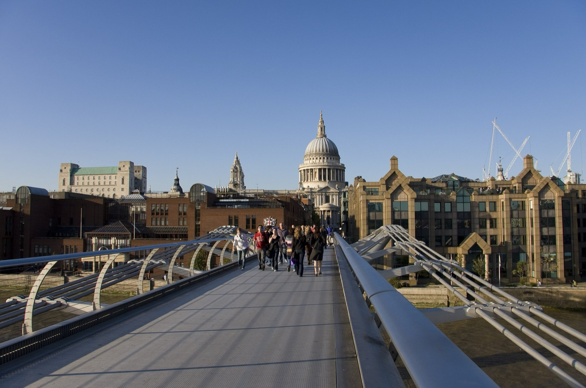
La cupola di Wren da una parte del fiume; una centrale elettrica piena d'arte, il teatro di Shakespeare e il mercato più antico di Londra dall'altra.
Perché andarci
Dalla cupola di St Paul's al bancone di Borough Market sono due chilometri e mezzo a piedi, quasi tutti lungo il fiume.
Sulla riva nord c'è la cattedrale di Christopher Wren, costruita dopo il Grande Incendio del 1666, con i suoi 528 gradini fino in cima alla cupola. Il Millennium Bridge, solo pedonale, porta dritto sull'altra riva: Bankside, che ai tempi di Shakespeare era il quartiere dei teatri, delle osterie e delle prigioni. Oggi ci sono la Tate Modern, la copia del Globe e, poco più in là, il mercato alimentare dove Londra fa la spesa da secoli.
È una zona perfetta per una giornata che avanza: molto è gratis, tutto è vicino, e si può accorciare o allungare a piacere.
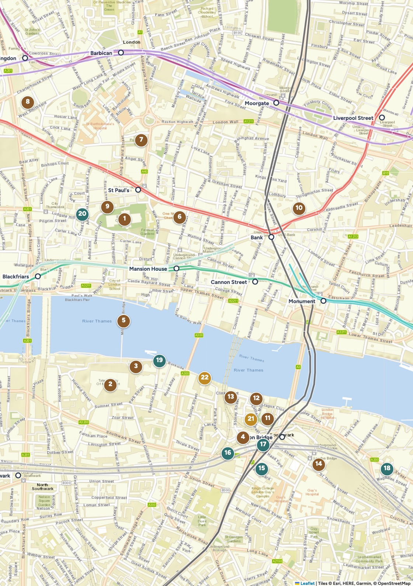
La mappa
Orientarsi
A nord del fiume c'è la City: la cattedrale su una piccola collina, Ludgate Hill, con intorno il centro commerciale di One New Change, Paternoster Square e, poco più su, il giardino di Postman's Park. La metro più vicina è St Paul's (Central line); dall'hotel conviene Mansion House, sulla District line, a 8 minuti a piedi.
A sud del fiume c'è Bankside: dal Millennium Bridge si va a est lungo la riva, tra la Tate Modern, il Globe, i vicoli di Clink Street e il veliero di Drake, fino a Southwark Cathedral e a Borough Market, sotto i binari di London Bridge. Lo Shard è lì sopra, impossibile da perdere.
La Tate Modern con la Turbine Hall e la terrazza del 10° piano, il Millennium Bridge, la terrazza di One New Change, Postman's Park, Southwark Cathedral, il rosone di Winchester Palace, il nuovo London Museum e i vespri cantati a St Paul's. Si paga solo per salire sulla cupola o sullo Shard.
Il molo di Bankside è davanti al Globe. L'Uber Boat da Tower Pier, a 15 minuti dall'hotel, passa sotto Tower Bridge e London Bridge: costa circa £11,70 a testa online, metà per i ragazzi fino a 15 anni. La metro costa molto meno; il battello vale per la vista.
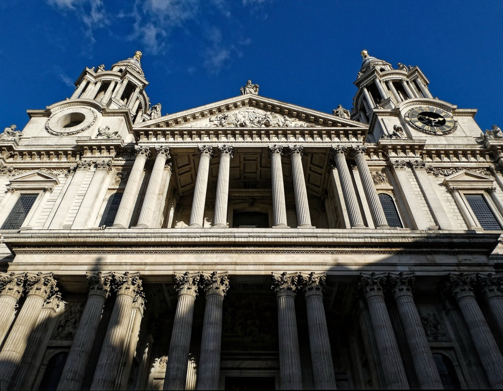
Top sight · 1
La cupola che dal 1710 domina la City, costruita da un solo architetto in 35 anni.
La cattedrale medievale bruciò nel Grande Incendio del 1666. Christopher Wren posò la prima pietra della nuova il 21 giugno 1675, senza nessuna cerimonia, e la vide finita nel 1710. Qui si sono sposati Carlo e Diana nel 1981. Nella cripta ci sono le tombe di Nelson, l'ammiraglio di Trafalgar, e di Wellington, il vincitore di Waterloo; quella di Wren è una semplice lastra di pietra, con accanto la scritta in latino lasciata dal figlio: "Lettore, se cerchi il suo monumento, guardati intorno".
La notte del 29 dicembre 1940 le bombe tedesche incendiarono la City. Il fotografo Herbert Mason scattò la cupola che emergeva intatta dal fumo: "St Paul's Survives" diventò l'immagine simbolo di Londra sotto il Blitz. Il sarcofago di Nelson, invece, era stato fatto per un altro: il cardinale Wolsey, morto in disgrazia nel 1530.
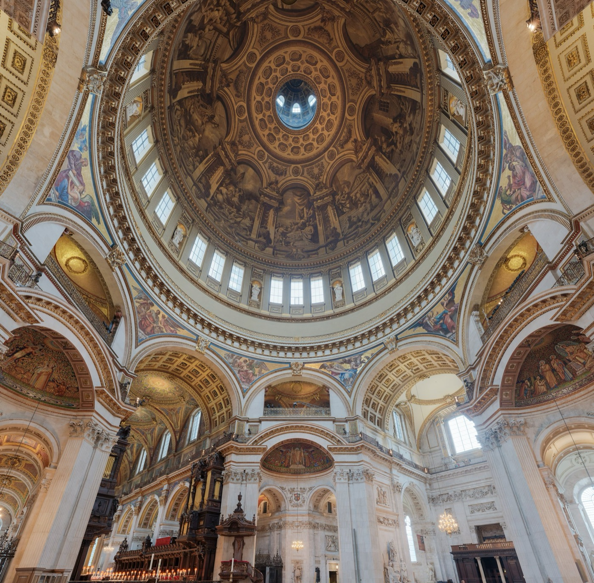
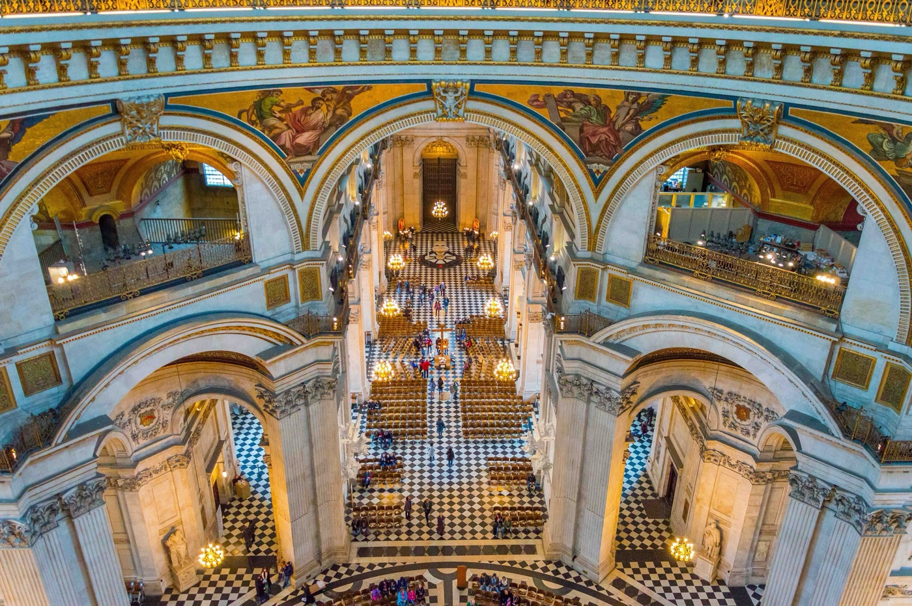
Si sale solo a piedi, niente ascensore. Dopo 257 gradini c'è la Whispering Gallery, all'interno, a circa 30 metri: se una delle ragazze sussurra contro il muro, le altre la sentono dall'altra parte della cupola. A 376 gradini si esce all'aperto sulla Stone Gallery; a 528, per scale sempre più strette, si arriva alla Golden Gallery, a circa 85 metri, sotto la lanterna. Sconsigliato a chi soffre di vertigini o di spazi stretti.
Entrate alle 9:30 e salite subito alla cupola, prima dei gruppi. Le ragazze nelle gallerie devono stare con un adulto. La domenica, o se non volete pagare, ci sono i vespri cantati (Evensong): alle 17 nei giorni feriali, alle 15 la domenica, gratis, circa 45 minuti. Gli orari di febbraio escono più avanti.
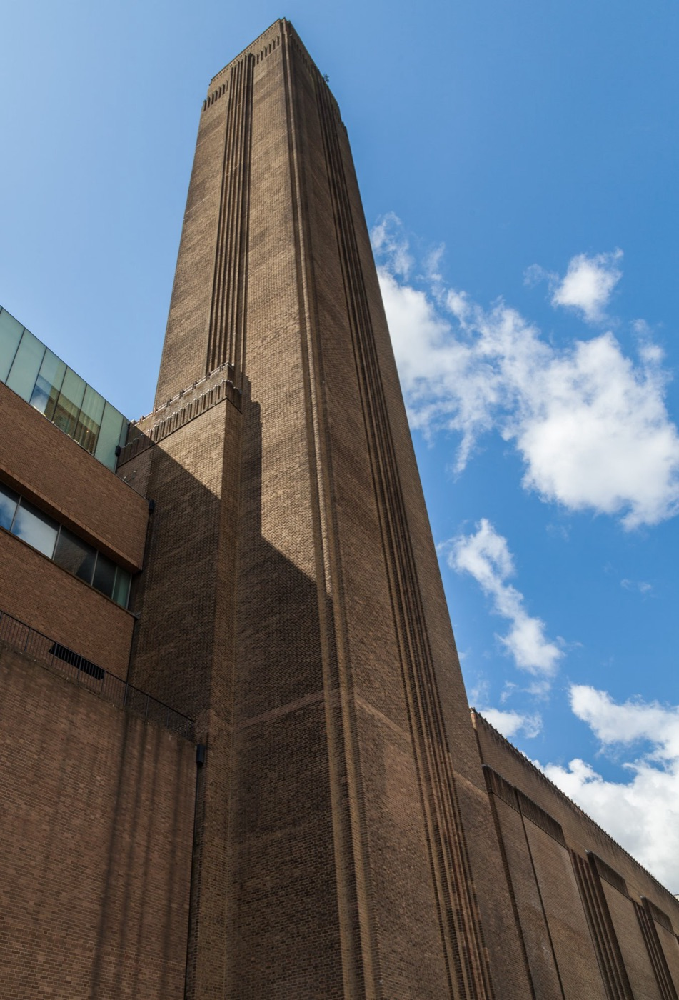
Top sight · 2
Una centrale elettrica a carbone trasformata in museo d'arte moderna. Gratis.
L'edificio è la vecchia Bankside Power Station di Giles Gilbert Scott, lo stesso architetto della cabina telefonica rossa; la ciminiera è alta 99 metri. Chiusa la centrale nel 1981, il museo ha aperto nel maggio 2000. Si entra dalla Turbine Hall, la sala delle turbine, alta come un palazzo: fino all'11 aprile 2027 c'è Hold di Tarek Atoui, un'installazione di suoni fatta di canne di bambù, tamburi e corni che suonano col vento. Ci si può sedere sulle pietre del pavimento e sentirle vibrare.
Nell'edificio nuovo, il Blavatnik, l'ascensore porta al Level 10: terrazza panoramica gratuita, con St Paul's proprio di fronte. Si vede su tre lati, perché il quarto guarda dentro le case dei vicini, che nel 2023 hanno vinto una causa alla Corte Suprema. Dom-gio 10-17, ven-sab fino alle 21: dopo il tramonto, verso le 17, la città si accende.
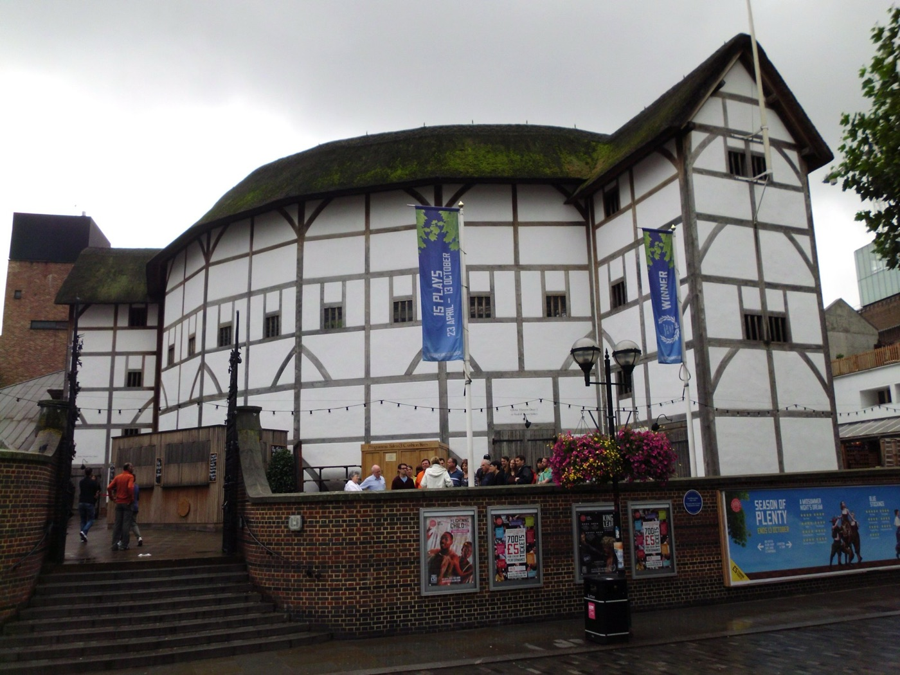
Top sight · 3
L'unico tetto di paglia permesso a Londra dal Grande Incendio del 1666.
Il primo Globe fu costruito nel 1599 dalla compagnia di Shakespeare, poco lontano da qui. Il 29 giugno 1613, durante l'Enrico VIII, un colpo di cannone di scena incendiò la paglia del tetto e in un paio d'ore il teatro bruciò: nessun morto. Quello di oggi, ricostruito in legno di quercia, è nato dalla testardaggine dell'attore americano Sam Wanamaker, che ci lavorò per oltre vent'anni e morì nel 1993, quattro anni prima dell'apertura.
Accanto al Globe c'è il Sam Wanamaker Playhouse, un piccolo teatro coperto illuminato solo da candele. A febbraio 2027 ci sono Giulio Cesare (fino al 14) e Il gabbiano di Čechov, in inglese. Orari e prezzi da verificare.
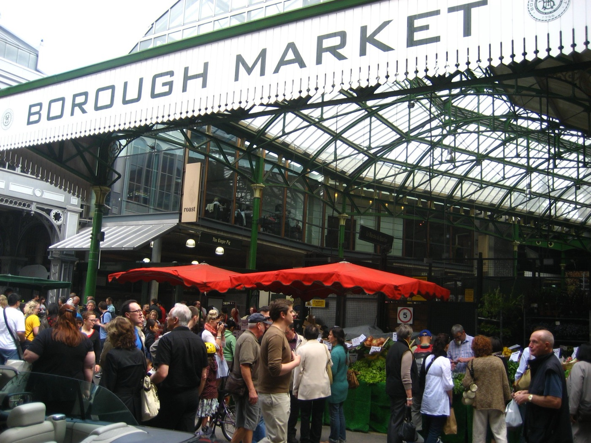
Top sight · 4
Un mercato che per legge non si può vendere, chiudere né spostare.
Qui, all'imbocco del London Bridge, si vende cibo almeno dal Duecento. Nel 1754 il Parlamento lo chiuse perché intralciava il traffico; gli abitanti della parrocchia raccolsero £6.000 e comprarono il terreno dove sta ancora oggi, sotto le arcate della ferrovia. Al numero 7 di Stoney Street è stato girato l'ingresso del Paiolo Magico in Harry Potter e il prigioniero di Azkaban, anche se la vetrina oggi è cambiata.
Il panificio di Bread Ahead, su Cathedral Street, ha un banco solo per i donut ripieni, come quello alla crème brûlée. Mar-sab 9-17, dom 10-16. In otto, mandate due persone in coda e gli altri a prendere i posti in piedi intorno a Southwark Cathedral. Arrivare prima delle 11 il sabato: dopo c'è la folla.
Da vedere
Il ponte pedonale d'acciaio, lungo 325 metri, fu inaugurato dalla regina il 10 giugno 2000 e chiuso pochi giorni dopo: oscillava sotto i passi della folla, e i londinesi lo chiamarono "Wobbly Bridge". Riaprì nel 2002 con 91 ammortizzatori. Nel 2009 i Mangiamorte lo distruggono nella prima scena di Harry Potter e il principe mezzosangue.
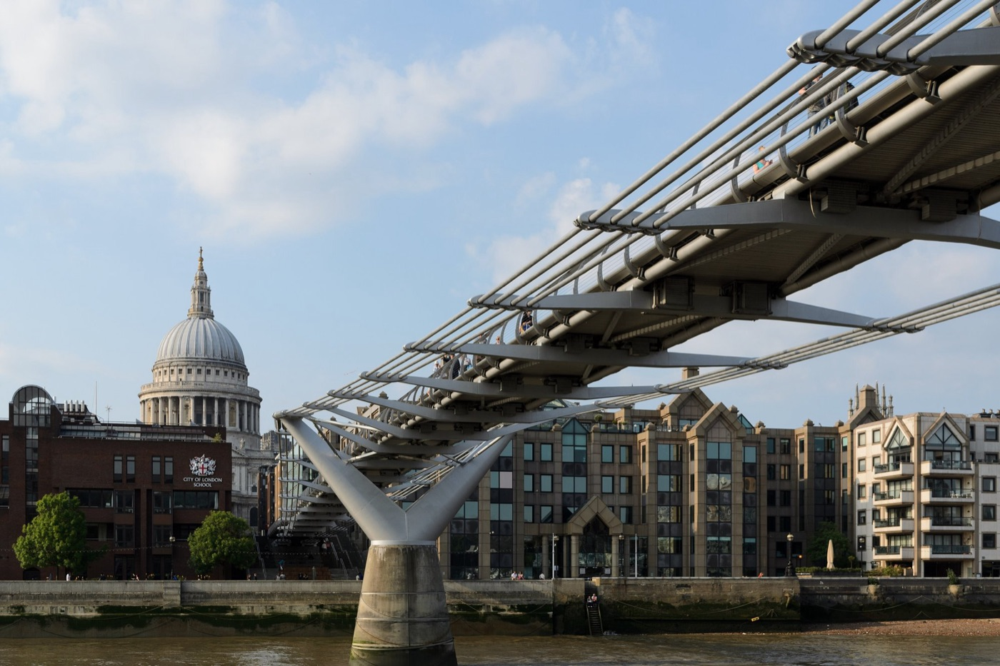
Un centro commerciale di vetro scuro, con un ascensore panoramico che sale alla terrazza del 6° piano: la cupola di St Paul's è lì, quasi da toccare, all'altezza degli occhi. Non si prenota. Gli orari ufficiali non sono pubblicati e la terrazza chiude col maltempo: da verificare sul posto. Vietati i bastoni per selfie.
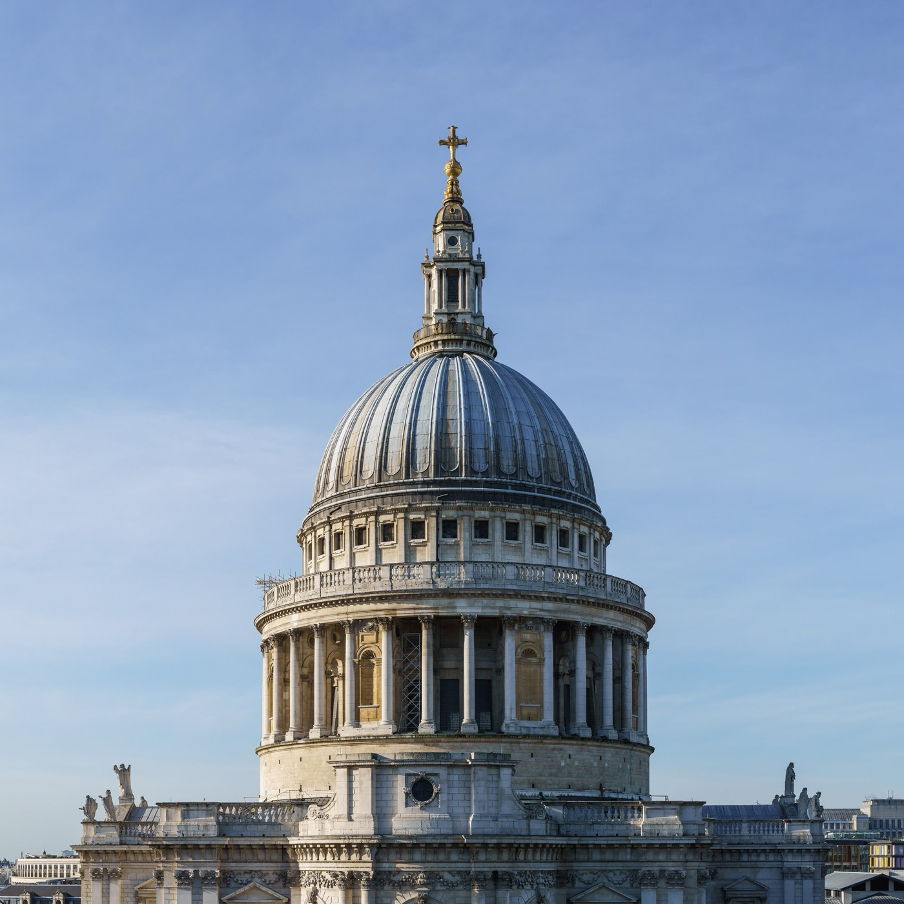
Un piccolo giardino con un muro di 54 piastrelle di ceramica: ognuna racconta una persona comune morta per salvarne un'altra, in un incendio, in un fiume, davanti a un cavallo imbizzarrito. Lo volle il pittore G. F. Watts nel 1900. È al centro del film Closer del 2004. Bastano dieci minuti, e le ragazze se lo ricordano.
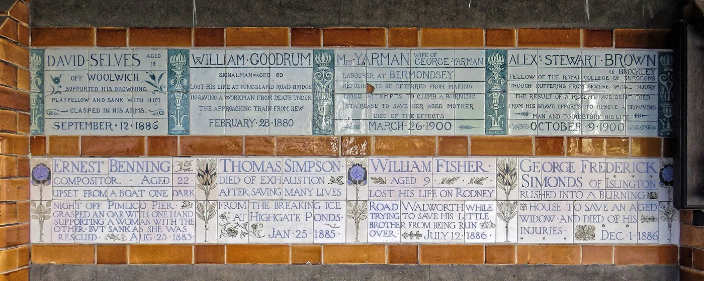
Il nuovo museo della storia di Londra apre il 28 novembre 2026 nei padiglioni vittoriani del mercato di Smithfield, a 10 minuti a piedi da St Paul's. Prende il posto del Museum of London, chiuso nel 2022. Orari e biglietti a tempo non sono ancora pubblicati: da ricontrollare a gennaio. Il London Museum Docklands, invece, è a Canary Wharf, nel capitolo di Greenwich.
Un arco di pietra del 1672 che segnava il confine tra la City e Westminster, su Fleet Street. Nel 1878 fu smontato perché bloccava il traffico; un birraio lo ricostruì come cancello della sua villa in campagna, e nel 2004 è tornato qui, pietra per pietra.
Il museo della banca centrale: banconote, monete e la storia della sterlina. È sulla strada a piedi tra l'hotel e St Paul's, passando per Cheapside. Chiuso il sabato e la domenica.
Una chiesa gotica a due passi dal mercato. C'è la statua di Shakespeare sdraiato, sotto una vetrata con i personaggi delle sue opere; suo fratello Edmund, attore, è sepolto qui dal 1607. Nello stesso anno fu battezzato John Harvard, il fondatore dell'università americana. Dal 2020 la chiesa ha un gatto, Hodge.
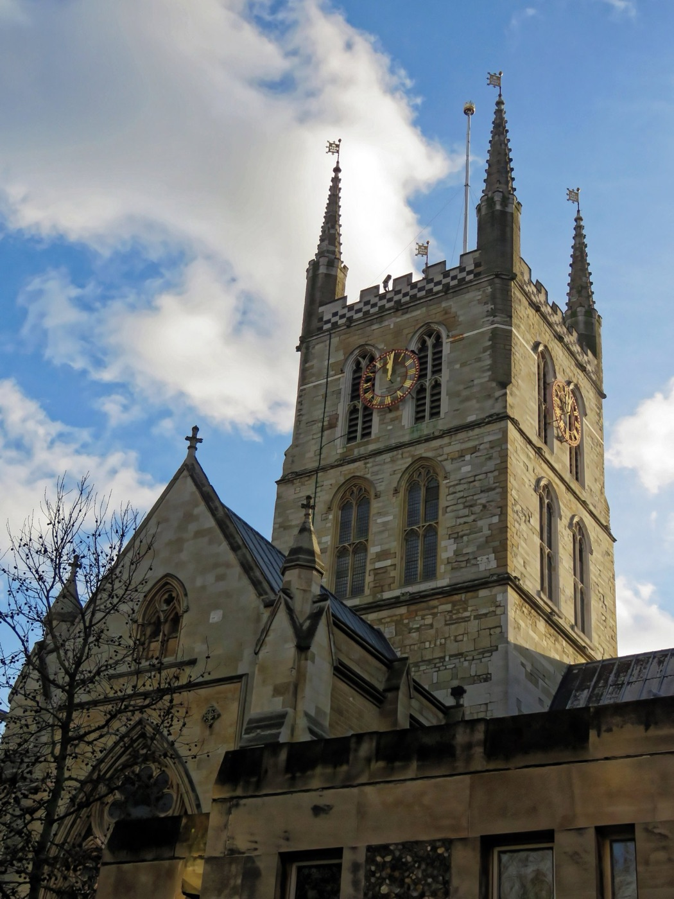
La copia a grandezza naturale del galeone con cui Francis Drake fece il giro del mondo tra il 1577 e il 1580, il primo inglese a riuscirci. Varata nel 1973, ha davvero attraversato l'oceano fino a San Francisco. Si visita da soli con l'audioguida, in mezz'ora: ponti bassi, cannoni e la cabina del capitano.
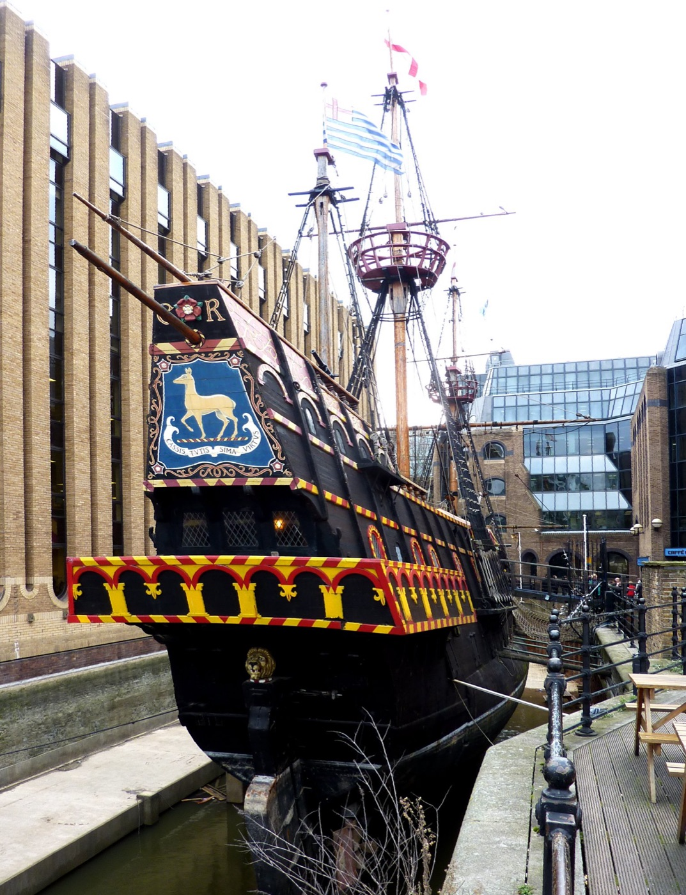
La prigione dei vescovi di Winchester, bruciata nel 1780 e mai ricostruita: da lei viene il modo di dire inglese "in the clink", in galera. Si toccano ceppi e strumenti di tortura: crudo, ma per le nostre ragazze va bene. A pochi passi, in strada, resta la parete del palazzo dei vescovi con il suo rosone, gratis.
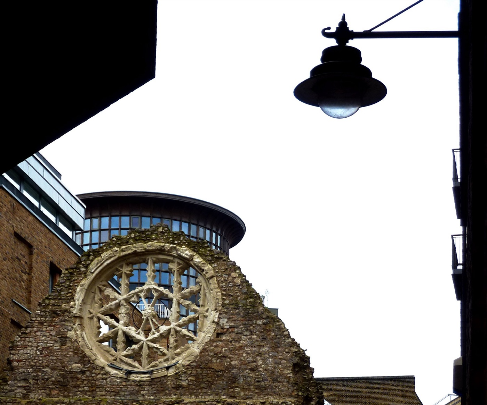
Il grattacielo di Renzo Piano, 310 metri, il più alto del Regno Unito. Si sale ai piani 68 e 69, al chiuso, e allo Skydeck all'aperto del 72°, a 244 metri. Attenzione alle fasce d'età: qui pagano intero anche le ragazze di 16 e 13 anni. Per noi 8 da £206, e il prezzo cambia con la data e l'ora.
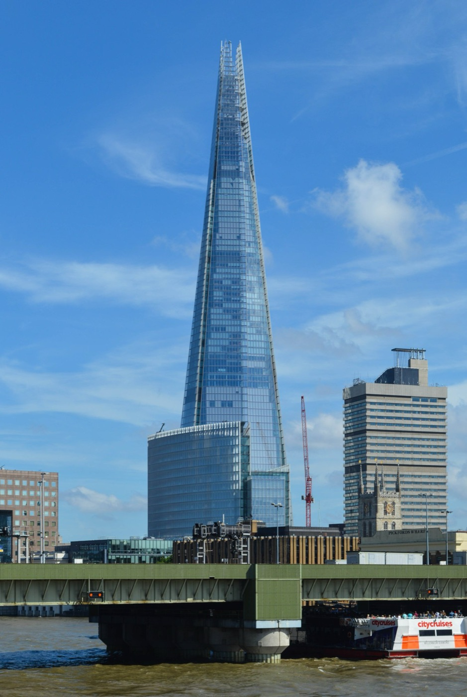
Passeggiata
Circa 2,5 km · una giornata con le soste · da martedì a sabato, quando sono aperti sia St Paul's sia il mercato
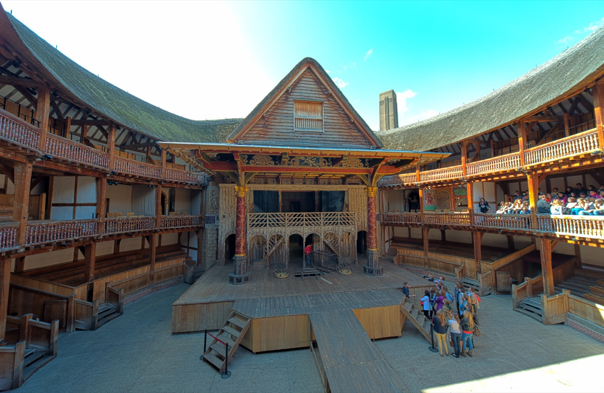
Da London Bridge a piedi fino a Monument, poi District line per Aldgate East: due fermate. Oppure lo Shard al tramonto, verso le 17, prima di rientrare.
Mangiare
£ meno di £12 a testa · ££ £15-30 · £££ oltre £40. Tutti aperti anche la domenica.
Una locanda del Seicento con le balconate di legno sul cortile, oggi del National Trust. Cucina da pub e Sunday roast, famiglie benvenute. Si prenota online.
Cucina inglese in una serra di ferro e vetro sopra il mercato. Il Sunday roast è il piatto forte, con un'opzione halal. Si prenota.
Pasta fresca fatta a mano, da £9,50 a £16,50 il piatto. Non prende prenotazioni e siede al massimo 6 persone per tavolo: in 8 si fanno due tavoli e si entra in coda virtuale con il QR code alla porta.
Una bistecca sola, la flat iron, a £15, con contorni da £3,50. Semplice e veloce. Si prenota online, e c'è una saletta per 12.
Dentro il Globe, con le finestre su St Paul's. Fish and chips al bar, pranzo della domenica al ristorante. Per i gruppi si scrive a enquiries@swanlondon.co.uk.
Brasserie francese a due passi dalla cattedrale: comoda per colazione prima della cupola o per un pranzo senza sorprese. Prenotazione online.
Dolci, pub e prima di partire
Donut ripieni e pane a lievitazione naturale. Nei video di TikTok quello alla crème brûlée costa circa £4,50: prezzo da verificare.
Un pub storico sul Tamigi, accanto a Southwark Bridge, aperto alle famiglie. La terrazza sul fiume non si prenota; per la sala, telefonate prima.
La terrazza di One New Change al tramonto, con la cupola illuminata, e il giro Millennium Bridge → St Paul's → terrazza (@volga_londonstories, @spensierati.in.viaggio). Il donut di Bread Ahead è tra le "cose sotto le £10" di @andreaelaura.
Tate Modern, Millennium Bridge, One New Change, Southwark Cathedral e London Museum sono gratis. Prezzi di ottobre 2026.
Crediti fotografici
Foto da Wikimedia Commons, pubblicate con licenze Creative Commons o in pubblico dominio. Mappe: Esri, HERE, Garmin e i contributori di OpenStreetMap. Linee della metro: OpenStreetMap.
Appunti